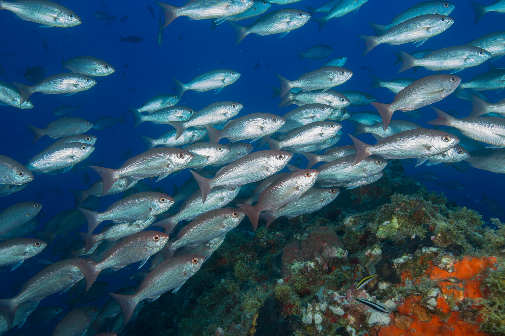

| Non-Catch Share Program | Landings | Quota | % of Utilization | Season Length | Active Vessels | Revenue | Price | Revenue per Vessel | Gini* |
|---|---|---|---|---|---|---|---|---|---|
| Scallops | 32.12 | 21.62 | 8.63 | 15.57 | 0 | 84.72 | 39.81 | 84.72 | NA |
| Freezer Longline | 21.73 | 20.16 | 1.3 | 0 | 11.76 | 53.59 | 26.17 | 37.42 | NA |
| GOA Rockfish | 23.39 | -7.89 | 33.96 | 0 | 6.42 | 30.05 | 5.4 | 22.21 | NA |
| * Color scheme is reversed to indicate that increases in the Gini reflect increases in inequality of revenues across vessels. |